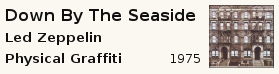

(Note that this page only describes the default layout, other layouts are available, including all-in-one-window layouts, in the "Layouts" tab of the settings dialog)
Player window
- You can change the volume by using the mouse wheel almost anywhere on the window
- Sort order indicator ( if ordered, if shuffle, if random) :
left-click : toggle between last shuffle/random mode and last ordered mode
right-click : sort menu : choose a saved random/ordered mode, or edit a custom one - Filter indicator ( if no filter, if playlist filtered, if static list ) :
left-click : clear filter
right-click : filter menu : choose a saved filter, or edit a custom one - Queue indicator (no icon if no queue,
 if there is a queue) :
if there is a queue) :
left-click : clear queue
right-click : queue menu : enqueue album/artist, set queue mode, edit queue - Rating indicator (): display current rating (1 star = 20 %), click to set the rating
- Song title :
left-click : list song from the album
left-click on a song to select it, middle-click to enqueue it.
right-click : song menu : edit song tag, list of songs with same title - Artist name : click to select an artist. If you right-click on the artist you choose, it will display a menu with the list of albums by this artist, and right-clicking on an album to select a song from this album.
click on the left of the artist name to lock/unlock on this artist () - Album name : click to select an album from the current artist, If you right-click on the artist you choose, it will allow you to choose a song from this album.
click on the left of the album name to lock/unlock on this album () - Previous song button ():
left-click : select previously played song
right-click : list the 5 last played songs - Next song button (
 ):
):
left-click : select next song (according to sort order)
right-click : list the 5 next songs to be played - Right-click on the stop or quit button enqueue that action : it will stop/quit only when the current song and the queued songs (if there is any) are finished.
Browser window
(the filters in the browser window have no effect on the playlist)-
main list : display songs matching the selected filters
double-click on a song to play it now, double middle-click to enqueue it -
right click on the column headers to add/remove columns
drag and drop on a column header to change the column position - recent filter menu :
allows to easily go back to what you previously browsed
(middle-click on a filter combine this filter with the current filter) - right-side :
the two lists are used to set the primary and the secondary filter
the filter can be saved_filter(s), artist(s), album(s), genre(s), year(s), label(s), folder(s)
the list for the secondary filter, displays only artists/albums/genres/years/labels/folders present in the primary filter
(setting the primary filter reset the secondary filter)
To display picture and/or info of artist/albums, or sort them by year, use the small preferences icon at the bottom or the options submenu of the context menu, it also allows you to switch to the cloud view, or (for artists and album), the mosaic view.
Double-click on a artist/album/genre/... to set it as the play filter, double middle click to enqueue it
- bottom :
Artist/album statistics with picture, left click on picture to see a bigger version
right-click to get the album/artist context menu where you can notably set the picture, mass-edit the tags of all the album/artist songs...
The mouse wheel on the artist switch to 2nd (3rd,4th,...) artist when the selected song has multiple artist (the artist names must be separated by ', ' or ' & ' in the song tag)
{kind=link}
{kind=link}
Tray icon and tray tip window
If you have the gtk2-trayicon perl bindings installed, gmusicbrowser will put an icon in the tray : .With it, you can :
- left-click : show/hide the gmusicbrowser windows
- middle-click : Play/Pause
- right-click : Menu with more controls
- wheel : change volume
The tray tip window works exactly like the player window, that means it can be used to select a song from the album by clicking on the song title, or even any song from the library by clicking on the artist name and right-clicking on the chosen artist and album...
Two examples of tray tip layouts :


Weighted Random mode
You can choose/edit a random mode by right-clicking on the sort indicator.This screenshot shows a complex random mode with 4 visible rules, that I will explain to try to make it a bit more understandable.
- The first rule makes the chances of a song being picked depend on the last time it was played. The half-life is set to 15 days, which means that a song which has last been played 15 days ago will have half the chances of being picked (compared to song that has never been played), 30 days ago : 3/4 the chances, 7.5 days : ~0.293 the chances, so a song that has just been played is very unlikely to be picked again the same day.
- The second rule makes it so that a song which has the label 'Bootleg' set has 1/10 the chances of being played compared to song for which this label is not set.
- The third rule makes songs that have been recently added a bit more likely to be picked.
- The fourth rule makes the chances depend on the song rating, in this example a song with a rating of 60 will have 2% more chance of being picked than a song with a rating of 50.
For each rule, an example with the current song is displayed, showing the value used in the rule and the final score for this rule.
The global score for a song is calculated by multiplying all the score obtained by each rules. At the bottom of the dialog, you can see the global score for the song, and the distribution of the scores for the current playlist.